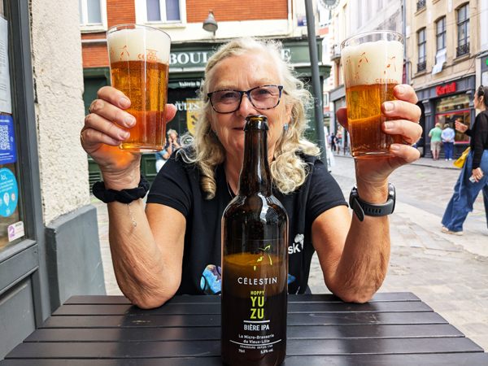
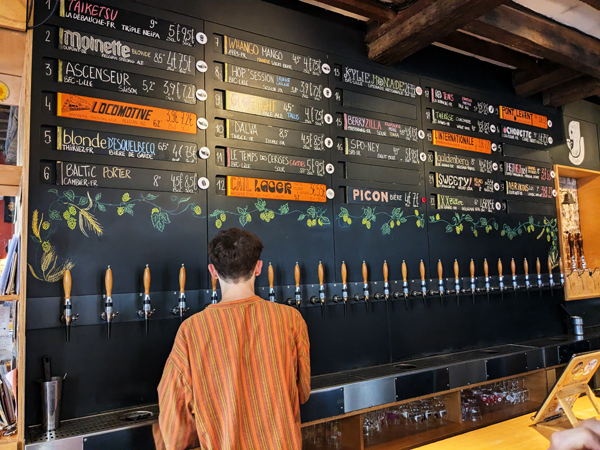
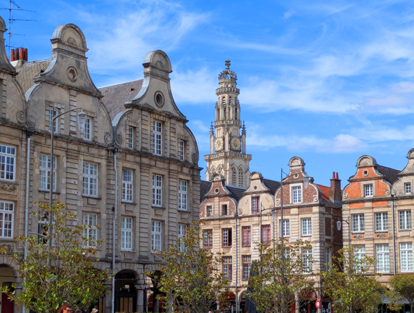

Thursday 5th August We left Kingsclere on the 8:55 bus (again) and got a train from Basingstoke at 9:36. Everything was running on time for a change and we arrived at Waterloo at 10:26 giving us enough time to walk across London to St Pancras. When we had booked our tickets, Eurostar were having a sale which made the Premier class tickets cheaper than Standard class. This meant that we could miss all the queues and go straight in. After getting through security and immigration, we went straight into the Premier lounge.
This was a far nicer place to wait for our train than the normal waiting area downstairs. There were complimentary snacks as well as free drinks. We had a few beers while we waited for our train to be called. We boarded the train and it left on time at 13:01
The train journey was very enjoyable. Being in Premier class meant we had a three course meal and free drinks. Roz had a few glasses of Champagne while I had a couple of Bloody Mary's. We were both quite light-headed by the time we arrived in Lille.
The train arrived on time in Lille at about 4:30. I had a list of bars I wanted to visit in Lille. The first one, Estaminet Hein was only a few minutes walk from the station so we stopped for one in there on the way to the hotel. After our drink we walked to the Ibis Styles which was only another five minutes away. We checked in, left our bags in the room and went straight out again.

The main squares were just round the corner from the hotel. We walked through them and started heading to Rue Royale where there are quite a few good bars. We found Célestin beer shop on the way which had a couple of tables. We bought a bottle of IPA which we drank outside before continuing to L'Illustration. This place had been recommended by someone on the SMB and was a very nice little bar. After one in there, we went to Le Chopp'ing which was just about next door. This was the place we had got stuck in a few years ago and was very good again. They have 18 draught beers. Some of the Belgian ones we were drinking last time had gone but the price had come down from €6 a pint to €5 so we could not really complain.

It was a short walk from there to La Capsule. This was an excellent bar and I was able to try the bière de garde, one of the things to try from my Beer Bucket List book. Things were starting to go a bit downhill by this stage. Roz was feeling particularly pissed and although I thought I was more sober, was not really that far behind her. We had a couple of drinks in there before walking to Beer Square. I don't really remember much about being in here!
We decided it was time to abandon the pub crawl at this point and returned to the hotel missing out on the last two bars on my list. A very enjoyable day despite it coming to an early end.
Friday 6th August We had breakfast included with the room and went down at about 9. After eating, we went out for a walk round the town retracing the route we went on last night. There was not too much else that we wanted to see in Lille so we we returned to the hotel, packed our bags and checked out. We walked to Lille Flandres station and caught the 10:53 train to Arras. This was on time and got into Arras at 11:31. We walked across the road to the Mercure Hotel where we had a room booked for two nights. We were not able to check in when we arrived so left our bags and went for a walk round the town.

We walked into the main squares and then followed the walking tour around a few other sights. None of these were that impressive compared to the squares but it was an enjoyable enough walk nonetheless. We bought food for lunch and walked back to the hotel by 1:30 by which time we were able to check into our room.